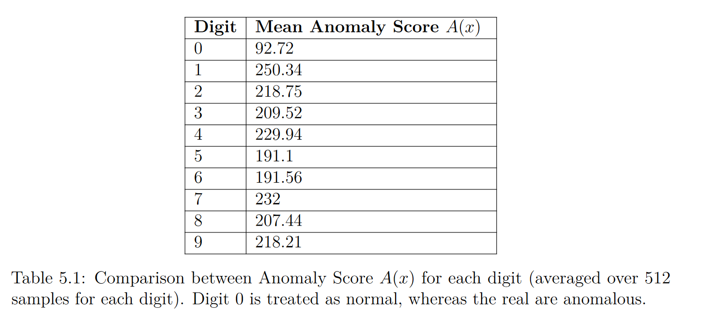
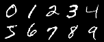
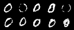

*ang. Generative Adversarial Networks
Uczymy równocześnie 2 modele:
Po wytrenowaniu GANu, generator G wyuczył się mapowania $ G(z) = x$. Generator mapuje z przestrzeni $\mathcal{Z}$, do przestrzeni obrazów $\mathcal{X}$.
Wytrenowany GAN oferuje nam mapowanie $\mathcal{Z} \rightarrow \mathcal{X}$, lecz potrzebujemy też mapowania odwrotnego $\mathcal{X} \rightarrow \mathcal{Z}$.
Innymi słowy: mając obraz $x_i$, chcemy znaleźć punkt $z_i$ z przestrzeni $Z$ tak aby obraz $G(z_i)$ był "najbliższy" obrazowi $x_i$.
Definiujemy funkcję: $$ \mathcal{L}(z_\gamma) = (1 - \lambda) \cdot {L}_R(z_\gamma) + \lambda \cdot {L}_D(z_\gamma) $$ gdzie:
Bazując na naszej funkcji kosztu $$ \mathcal{L}(z_\gamma) = (1 - \lambda) \cdot {L}_R(z_\gamma) + \lambda \cdot {L}_D(z_\gamma) $$ mapujemy zadany obraz $x$ do przestrzeni $\mathcal{Z}$.
Dla obrazów normalnych jesteśmy w stanie znaleźć takie $z$, że $G(z)$ będzie podobne do $x$, natomiast dla obrazów, które są anomaliami nie będziemy w stanie znaleźć takiego $z$.
Wtedy również możemy zdefiniować funkcję $A(x) = (1 - \lambda) \cdot R(x) + \lambda \cdot D(x)$, gdzie $R(x)$ i $D(x)$ to wartości funkcji ${L}_R(z_K)$ i ${L}_D(z_K)$, gdzie $K$ to ostatni krok algorytmu wstecznej propagacji.
Zakładamy, ze 0 to klasa normalna, a reszta to anomalie.
Po lewej - obrazy zadane dla modelu.
Po prawej - zrekonstruowane obrazy.
 
Bartosz Wójtowicz